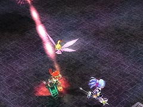

目次 > ゲームについて > 日本Falcom 攻略 > ZWEI II > ボス戦 > ナイトロード
らんの眼
ZWEI II (ツヴァイ 2、ZWEI II Plus)
| 概要 | 情報 | 攻略チャート |
| フード交換 | ペットについて | ボス戦 |
| 敵キャラ一覧 | ハンターランク | G-コロッセオ |
| アイテム一覧 | ガジェット一覧 | トレジャー一覧 |
| ダンジョン一覧 | クリアデータ特典 | Plusの追加要素 |
| ZWEI II攻略へ | 目次へ戻る |
| ナイトロード 前半 |
| ナイトロードはスピリの古代迷宮で戦えるボスとして登場しました。戦う時間に制限が付いており、当時も少しやっかいな相手でした。 攻撃としてはアルウェンの「極光の魔法」が使いやすいです。ナイトロードがワープしてから攻撃をするまでの時間に、「極光の魔法」を3、4発撃っていけば何とかなります。 ナイトロードの攻撃として、まず剣を飛ばした攻撃があります。これはテルミドールの攻撃と同じで、地面に刺さった剣に触れてもダメージを受けるので注意してください。 ちなみに距離を取っていれば特に問題はありません。  次にレーザーの攻撃です。これは発射のタイミングに合わせてジャンプでよけないと、ダメージを受ける危険があります。また、主人公を狙って撃ってくるので、立ち止まると連続してダメージを食らいます。 次に、回転して周囲を攻撃するものです。これは、距離さえ取っていれば何の問題もありません。 最後に、光線を放射状に撃つ攻撃です。これは、光線の数が多く、しかも二重に使ってくるのでナイトロードとの距離が近いとよけるのはかなり難しいです。しかし、十分な距離を取っていればよけることは可能です。 前半のナイトロードは、剣を飛ばす攻撃、レーザーの攻撃、回転、放射状の光線の攻撃の順番で攻撃を行います。そのため、次の攻撃に対する心の準備だけはできるはずです。 |
| ナイトロード 後半 |
後半には、前進に炎をまとい主人公たちを追いかける攻撃が追加されます。ナイトロードの動きが遅いので、追いつめられることはまずありませんが、追いつめられると、とてつもないダメージを受けるので注意してください。 追いつめられないように行動すれば、一方的に攻撃できます。 なお、後半のナイトロードの攻撃パターンは、レーザーの攻撃、剣を飛ばす攻撃2回、主人公たちを追いかける攻撃の繰り返しとなります。 |
| 概要 | 情報 | 攻略チャート |
| フード交換 | ペットについて | ボス戦 |
| 敵キャラ一覧 | ハンターランク | G-コロッセオ |
| アイテム一覧 | ガジェット一覧 | トレジャー一覧 |
| ダンジョン一覧 | クリアデータ特典 | Plusの追加要素 |
| ページの上部へ | ZWEI II 攻略へ | 目次へ戻る |